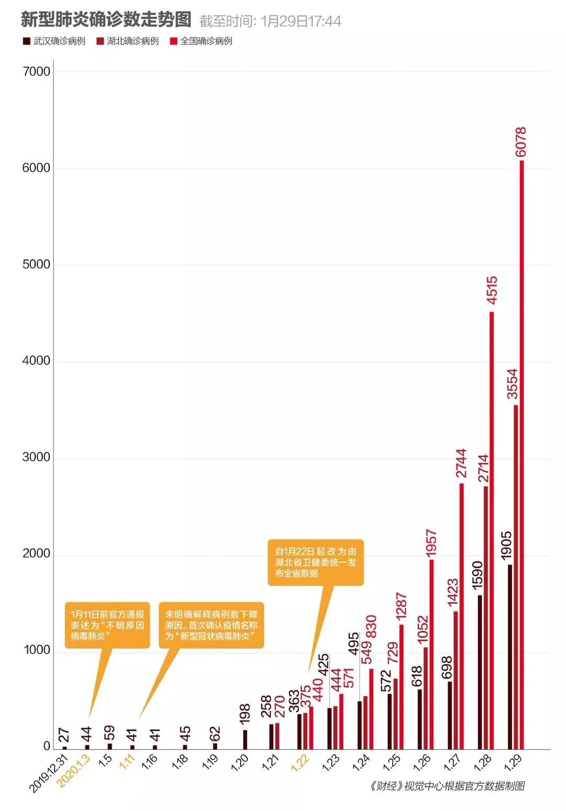

疫情危机中不被看见的人们：武汉周边城市百姓的自救行动
原文链接 备份链接 新型冠状病毒疫情像是一场突如其来的阴霾，在这个冬天笼罩了华中大地。相较于最受关注的武汉市民，周边城市的人们，像是处在阴霾边缘，遭受侵袭，却又不常被看见。面对重重困难，孝感、黄冈、黄石、信阳、荆州、天门……各个城市的百姓 …

在这场抗击新病毒的战争中，一线医护人员不得不为自身防护揪心，他们和医院、捐赠人一起被迫卷入一场医疗物资的募捐赛
文 |《财经》记者王丽娜 辛颖
编辑 | 王小
这是历次疫情中，一线医院大批量第一次直接向公众募捐，也是第一次，诸多媒体、平台齐力在发布新闻中，加入了向全社会发布募捐需求的信息。
不仅新型冠状病毒感染疑似感染者，就是冲在抗击病毒一线的医护人员，也难得有全套的N95口罩、防护服、护目镜，就像战士在战场上未着盔甲。
即便是SARS时期，也没有对医疗物资发生过这么迫切的需求。红十字会、湖北新型肺炎防控指挥部、各医疗机构，都发出医疗物资告急公告，接受社会捐赠。
蕴藏在社会的医疗防护物资，已成为各家“争抢”的对象。在一个民间临时搭建的湖北医疗物资需求信息平台上，截至2020年1月27日12时，来自医院的需求有103家。
如此规模的医疗物资告急背后，应对重大突发公共事件的应急物资储备和调度机制，是如何发挥作用的？疫情凶猛，措手不及的远不止患者。

除夕夜，医疗物资紧缺不再是“秘密”
没有消毒剂，“联系一个厂家，结果刚刚被（其他医院）截胡。”武汉一名医务人员说。护目镜、N95口罩、防护服、眼罩等医疗防护物资，都是医院之间被迫“争抢”的资源。
湖北黄冈市黄州总医院负责受捐的童慧，刚经历一场类似“竞争”。1月25日，当地民营企业自发组织捐赠，告诉她有消息称武汉市一个仓库存放11万只外科口罩。外科口罩防护力不强，“有总比没有好”，童慧声音沙哑着告诉《财经》记者。
武汉、黄冈均已“封城”， 黄州总医院院长当即联系湖北省疫情防控指挥部，拿到通行证，又求助黄冈市公安局，警车开路进入武汉。“挺紧急的，怕被别人抢先一步，现场又谈价钱，才买过来。”童慧说。
早在除夕前夜，武汉市新型肺炎防控指挥部以通告形式，公布的接受捐赠物资，有医用设备、防护设备、耗材（其中口罩需求量较大）等。同日，武汉同济医院、武昌医院等定点收治发热病人的医院，也陆续发布社会捐赠公告，急求护目镜、N95口罩、防护服等。
武汉医生圈里除夕夜的一条信息称，“大年三十，护目镜口罩全部自备，有的甚至家人买的，你们什么时候见过医生戴着五颜六色的口罩。”被大量转发。
形势紧迫。1月24日，微信公号“湖北之声”发布请求支援信息，提出武汉多家医院物资紧张，可能只够维持3—5天，并附上17家医院官方发布的信息。
有医院的人士看了却颇有点羡慕，“至少还能管个三五天，我们医院初三就开始只收病毒性肺炎病人，估计第一天都可能不够用，我们现在一个N95口罩用好几天”，在“湖北之声”留言求助称。
志愿者张鸣帮助医院对接捐赠信息。据他观察，1月25日下午，在武汉市的一些大医院，有所缓解，但主要是保障一线人员，其他科室和后方仍然缺乏，“小医院更缺”。
发出募捐信息第三天，武汉市一家医院负责捐赠的工作人员对《财经》记者透露，政府统一调拨和社会捐赠的物资陆续到达，但还是不够，病人在持续增加，“我们会让医护人员很节约地用”。
在与记者通话的十分钟里，这位负责捐赠的工作人员两次提醒有电话进来，“N95口罩特别紧缺，要不停地去筹（物资）”。她说自己凌晨一点才能休息，两三点有电话还要起来接，“跟一线比起来，我们好多了”。
有些医生为了节省防护服，控制喝水，怕上厕所， 这样工作十多个小时，只用换一次防护服。
武汉一家三甲医院负责联系捐赠的人，电话24小时不断，可惜的是，“很多捐赠是民用的，不符合医用标准”。
在一个民间临时搭建的湖北医疗物资需求信息平台上，截至1月27日12时，来自医院的需求有103家。主要集中在武汉、黄冈、孝感，上至三甲综合医院，下到基层卫生院，都在求助。
《财经》记者逐一致电武汉市各医院采购人，95%的电话一直忙线，或称急着接捐赠电话，匆匆挂掉。
位于黄冈市的刘河镇中心卫生院，已公布有4名门诊医护人员因发热被隔离。1月24日，刘河镇卫生院发布接受社会爱心捐赠的公告，向社会筹集医用的外科口罩、防护服、一次性乳胶手套、消杀器械，甚至医用帽子等物品。
负责该院捐赠的人士称，当地疫情防控指挥部每天调拨物资，派人送到医院，但是由于整体库存量不大，“医院需要每天申请”。
1月26日，在更基层的黄冈市堵城镇龙王村，一位村干部翻出许久不用的铜锣，在村中敲锣宣传疫情防控，因戴着口罩，要喊的足够大声。
隔壁村村医能找到的口罩渠道全都没货，只能把一次性口罩用热水烫了将就使用，黄冈连日下雨，口罩干得很慢。镇里的卫生院也发布了接受社会捐赠的公告。
黄冈市23日24时起全面“封城”，紧张感开始蔓延。当天，马像村卫生室收到通知，不仅是发热，连咳嗽的患者也一律不予诊治，劝告村民去县里定点医院就诊。
“没有防护，没办法接诊发热病人。”一位村医介绍，口罩紧缺早就出现了，“现在上面都开始呼吁捐赠，我们就也能公开求助了。”
“疾控中心每天会发一部分（物资），也只能维持一线科室防护。”荆州市公安县医院器械科的黄超，接听捐赠电话到凌晨一点多，“只是眼前够用”。他忧虑，疫情何时是尽头。
除夕前夜，赶回工厂复产
除夕前一天，回到湖南老家不久，戴建国接到赶工通知，立即驱车又返回深圳，从除夕早上7点开始连轴转。
戴建国的工厂生产口罩等医疗用品。1月23日，他收到深圳市市场监管局的订单，计划以政府采购的方式采购第一批口罩，一次性医用口罩400万个，医用外科口罩50万个，N95型30万个。
突发状况太多。原材料、机器、人员等，都得他来协调，还要接听各种口罩求购信息，繁忙时，“一分钟能接到六七个电话，都来自医院”。戴建国对《财经》记者说。
珠三角经济区是口罩产能的主要集聚区，像戴建国这样接到紧急订单复产的不止一家。
戴建国工厂赶出的口罩，由当地政府集中采购，统一调拨。工人吃住全在厂里，当地政府送来快餐。“我没什么时间吃饭，一分一秒都在争取最大限度产量”，有六七十个工人在生产线加班，很多是从老家被临时召集回厂的。
他们从早上7点工作到晚上12点，每天一共能生产20多万个口罩，政府部门每天派专人专车取货。
为抵御新型冠状病毒，建立了疫情联防联控工作机制。按该机制，工信部作为物资保障组牵头单位，做防控应急物资供应保障，建立重点企业临时生产调度机制。
戴建国企业所在的广东省工业和信息化厅建立起应急工作机制，摸查短缺的重要物资生产企业生产状态。
1月23日，戴建国收到的其中一份紧急通知称，贵司顾全大局，迅速恢复生产，启动全部产能，生产的全部产品由坪山区集中采购，统一调拨，“请贵司克服一切困难”。这份通知来自深圳坪山区新型肺炎疫情联防联控领导小组，由坪山区应急管理局代章。
这份通知，字里行间弥漫着紧张气息。此时，武汉市开始发布社会捐赠公告。据《财经》记者了解到，也是在1月23日和24日，中央紧急协调物资。
口罩、防护服等的生产企业，成为政府和热心的民间捐赠者竞相联系的对象。湖北某高校校友会的一名人士发现，“联系的国内符合标准的N95口罩基本都被政府收走了”，目前，各大电商平台均显示各类医用口罩无货。
1月25日，工信部发布信息称，自1月23日接到联防联控机制转来武汉物资需求清单后，立即通过中央医药储备向武汉紧急调用了防护服1.4万件、医用手套11万双；通过协调紧急采购，为武汉落实各类口罩货源300万个，落实防护服货源10万件，落实护目镜2180副。“现有30多家企业复产。产量达到一天800万只以上”。
运不进去，也怕出不来
无论是政府调拨的货源，还是来自社会的爱心捐赠，物资生产和到达一线医护人员手上都需要时间。
武汉1月23日10时封城，关闭出武汉通道，陡然加剧物资运送的难度。一些物流运输司机反馈，武汉封城之初，有一线人员执行很严，运送物资的车辆许进不许出，物流车担心出不去，很多车拉着物资停在外面不敢进，在途中的车不知道该怎么办。“好在，武汉市政府及时调整执行层面的偏差，得让物流车先能进能出。”来自物流业的李晖告诉《财经》记者。
封城的其他城市，也同样遇到物流运输问题。李晖说，封城初期，各地对物流车进出的政策不统一，如果从武汉再去支援其他城市，两个地方都需要去一一对接。为减少麻烦，支援武汉的物流运输车，需要捐赠企业当地的县政府开路条，“比如，证明这个车是去武汉送口罩，请沿途相关地方给予放行，请予协助等”。
为此，1月24日，湖北省公安厅下发紧急通知，运输应急物资及专业医护人员的车辆需协调入鄂通道，由省公安交通管理局统筹协调。各地要建立相应运输保障协调机制，确保物资及相关专业人员通行畅通。
运力还是紧张。一批捐给定向接待医护人员的定点酒店的洗手液，至1月28日还停留在北京的一个仓库内，不知道何时能发货，“未必会安排，因为不是医疗物资，运力资源有限，优先保重点”。有物流业人士告诉《财经》记者。
红十字会是武汉疫情防控指挥部指定的医疗物资的接受捐赠主体。武汉市红十字会将大宗物资储运交给了国药控股物流中心的仓库。
一名工作人员说，起初货物批量小，从21号开始每天大批量的收货，“货物都是批量来的，不停运，凌晨三点到货也得立即卸货。”口罩和防护服仍然最紧缺，“优先派送，基本每批当天到货就当天发走，由疫情防控指挥部直接调配安排”。
1月28日，公安部强调要派出足够警力协助管控地区，开辟绿色通道，优先保障救护车辆、防疫车辆和运送医护人员、药品器械、民生物资等车辆通行。擅自设卡拦截、断路等行为，将依法处置。
这仅是启动医疗物资应急供应保障后，一些片段，全貌如何，还有待更多信息公布。
“既要避免浪费，又要避免在关键时用不上”
随着疫情溢出武汉的，是医疗防护物资缺乏的逐渐蔓延。自大年初一起，北京、河南等地均有医院发布求助信息，没有病例爆发的地方也称物资紧张。
大年初一上午，虽然陕西省山阳县尚无新型肺炎病例，作为县卫生健康局副局长，徐毓才没有休息，他去走访了县里唯一定点救治医院，从发热门诊的医务人员处得知，N95口罩储备不充足。
当地县政府给定点救治医院先期拨付150万元，由医院采购医疗防护物资和转运救护车，及病区移动医疗设备。正值春节，“医院经常打交道的那些企业，也没有办法马上供过来，我刚才了解到，到正月初十左右，这些东西才能送来。”徐毓才对《财经》记者说。
一般情况下，医疗防护物资由医疗机构按照临床需要采购，维持正常的医疗问题不大，现在发生大面积的、非常严重的疫情，在应急状态下，作为防护物资，尤其是口罩，医疗机构和社会公众都需要，全国可能都比较紧张。
徐毓才分析，“这么严重的疫情，一般的医疗机构储备都难以应对。”
这次，中央调用的医疗防护物资就是通过中央医药储备。2003年“非典”之后，国务院发布《突发公共卫生事件应急条例》，对应急准备和应急处理等均有明确规定，国务院有关部门和县级以上地方政府及其有关部门，应当根据突发事件应急预案的要求，保证应急设备、救治药品等物资储备。
一名不愿透露姓名的医疗行业人士称，虽然各级医疗机构都有应急预案，但未必都得到重视，而且储备未必适用。
徐毓才所在的县成立防疫指挥部，办公室设在卫生健康局，下设几个小组，在有关的会议上，他提出医疗物资必须统一集中采购，按照需求管理，统一配发。
之前甲型流感病毒紧张时，有的医院储存“达菲”（抗病毒药物）过多，后来没有用就浪费了。“既要避免浪费，又要避免在关键时用不上。”徐毓才说，医疗防护物资紧张，就像战士上战场没有武器赤膊上阵，有点让人揪心。
一位湖北省医保局相关负责人告诉《财经》记者，目前放开医院采购药品、医用耗材，不受医保目录影响，即便有些产品不在医保目录，医保也会买单，医保报销不了的政府财政会兜底。
“没有审批、没有价格的（产品）挂网就行了。我们不作任何限制，可以先用，用了以后再报价。”上述湖北医保局人士告诉《财经》记者。
新型肺炎爆发是特别重大的突发公共卫生事件，这种强度和波及度，前期做预案的时候很难预判，不可能做最大评估，“出现短期物资储备或调度不够，这也是正常现象。”中国物流与采购联合会应急物流专业委员会的副秘书长范学兵对《财经》记者说。
平时的医疗物资储备不够时，会动用应急储备，可应急储备的是什么、有多少，是按应急储备目录和规模走的。如果这两者还不够，就会去抢蕴藏在市场和民众手中的社会储备，如果都抢这些资源，会加剧这种物资调度的不平衡。
应急生产和国际救援是常用应对策略。在2003年SARS爆发时，呼吸机不像现在这么普及，甚至有些三甲医院也没有。24小时之内，发改委进行了国际采购，空运过来后直接配送到医院。
SARS之后，中国首先提出应急物流的概念，针对突发公共事件，是不断完善经验的过程，每次灾难后，会重视应急物流和管理，但是每一次面对的情况都有区别。
“关键在于怎么缩短过程，尽快步入正轨，统筹各方力量。这次最关键的是，我们能不能快速建立起合理高效的指挥调度体系，实现现有资源更有效的一个整合。”范学兵认为，面对武汉疫情，要充分考虑物资保障的困难性，集中统筹资源，政府主导，社会参与，优化供给。
一名民间捐赠人士在年初一那天，从浙江的企业订购400个KN95，当即付款4000元，准备捐赠给武汉的医院，1月26日厂家通知她退款，并告诉她口罩已被国家征用，她对《财经》记者说：“如果真是国家征用，那就希望能更好保障医院需求”。
紧张的民间物资调配志愿者们
随着募捐和捐赠涌现的是一批民间物资调配志愿者。
1月26日晚，调配志愿者张平，吃着方便面，接受《财经》记者的电话采访，同时还不停地回复电脑屏幕上弹出的微信消息，“40小时没睡觉了”。他和几个本地朋友支援协调民间捐赠物资，他负责统计、审核医院需求。
越来越多的医护人员找到他们，“我明明已经送过去三批货物了，为什么他们医院还有一线人员来找我，说没有口罩。”张平说，他因此拒绝了所有前来联系的医院领导、主任，一再强调，要直接发货到医护人员手上。
张平不支持指定捐赠，看每天的物资量和需要的医院数量，平均分配，“要知道周边地区小医院物资更紧缺”。
刘伟是从深圳回湖北蕲春县过年，参与校友公益募捐后，了解到蕲春县一家公立医院防护物资紧缺，且需求很大，就开始用个人关系帮当地的医院调配物资。
假期过得比上班还忙。“一睁眼就是上千条未读信息”，一直到深夜，各类围绕物资的消息不断跳跃到他的手机上。刘伟每天新建的物资筹备对接群至少20个，多的时候有50个，对接的供货商10家以上，资金机构也有5家左右。
供不应求的市场，让民间物资调配志愿者几乎时刻不能松懈。“在采购一次性医用手术服（不是防护服）时，报价2元，我提供不少医院文件证明我是帮医院直接买，才谈到1.8元一件，定5000件。然而，不到3个小时，厂家告诉我没货了，几经追问才说是其他买方出更高的价买走了。”李海文说。
罗丹单兵作战协调资源，遇到问题会在群里和其他认识的志愿者讨论。“今天一上午都在‘打假’，我真是心力交瘁”。
最近有一家称有近百万口罩库存的企业找到罗丹，希望帮忙对接医院资源，“我知道这个企业同时在线上募集资金，帮他们联系了一家医院，约定好初三发货，可是迟迟没有到货消息，厂家也拒绝直接发货物仓储和物流的信息，又给出缺原材料、缺人手等难处，我不知道不发货的真正原因是什么，对于我们这些志愿者来说，识别信息真伪真的是很头疼的一件事。”
其实找到罗丹的医院并不算多，每天多也就两家，量也不大，她把医院需求发到物资群里，通常很快就有回复。
“武汉疫区供需矛盾最突出的还是防护服，每天需求是10万件，产能每天只有1.3万件。”1月26日，在国新办举行的疫情联防联控工作新闻发布会上，工信部副部长王江平指出，正值春节放假时期，防控物资供需矛盾非常突出。
尽管八方援手，医疗物资的紧缺，依然困扰一些医护人员。

（本文中张鸣、李晖、张平、罗丹为化名）
《财经》杂志整理了湖北17城部分医院需要的捐赠信息，他们大量需要口罩、防护衣和护目镜等医疗设备。详见：【捐赠信息：湖北17城部分医院急需防护物资】
“武汉肺炎”疫情系列报道

▷ 点击图片查看
责编 | 蒋丽 lijiang@caijing.com.cn
本文为《财经》杂志原创文章，未经授权不得转载或建立镜像。如需转载，请在文末留言申请并获取授权。
原文链接 备份链接 新型冠状病毒疫情像是一场突如其来的阴霾，在这个冬天笼罩了华中大地。相较于最受关注的武汉市民，周边城市的人们，像是处在阴霾边缘，遭受侵袭，却又不常被看见。面对重重困难，孝感、黄冈、黄石、信阳、荆州、天门……各个城市的百姓 …
原文链接 备份链接 他觉得自己像一个巨大的电插座，身上插满了孔，求助信息和资源提供信息被一起插到他身上，他再来牵线对接。 文 | 谢婵 李叙瑾 编辑 | 小豆 22岁的梅浩宇窝在出租屋里，吃光了13包泡面和3大袋零食，每天睁开眼睛，他就开 …
原文链接 备份链接 *************▲************* 大批量新国标标准的口罩正进入嘉兴“心脏仓” 。 （新华社/阿里巴巴供图/图） 全文共*4420*字，阅读大约需要*10*分钟。 “缺口以万为单位”，武汉市汉口医 …
原文链接 备份链接 武汉140公里以外：一天隔离50人，除夕夜接诊护士没有防护服丨武汉肺炎亲历 2020-01-25 22:47 作者：李静 来源：中国经营网 本报记者 李静 湖北广水报道 一天之内隔离50人，这对于广水市第一人民医院院办 …
原文链接 备份链接 记者 | 驳静 董冀宁 实习记者 | 李秀莉 昨天下午，“湖北之声”发布《武汉紧急求援》，指出多家医院物资紧张，可能只够维持3-5天。本刊记者接触到的一线医护人员也反应了同样的情况。“为什么我们显得这么着急呢？病毒肆 …